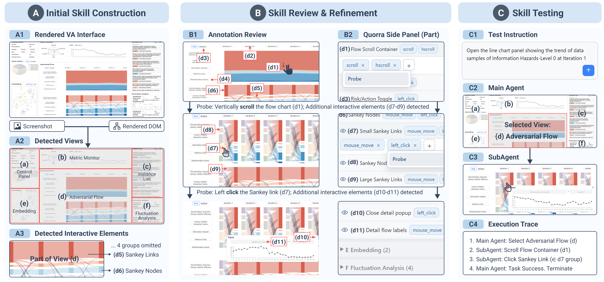

Abstract
Visual analytics (VA) systems combine computational methods with interactive visual representations to support reasoning over complex data. Recent advances in Vision-Language Model (VLM)-based GUI agents offer new opportunities for agents to operate existing VA systems and reuse the analytical capabilities embedded in their interfaces. However, domain-specific VA systems often employ customized visual representations and interactions whose semantics cannot be inferred from appearance alone. A GUI agent must understand not only which elements are interactive, but also what actions they support, under what conditions those actions are valid, and how they affect the analytical state. Such interaction semantics can be encoded as reusable agent skills, but authoring these skills remains difficult. We present Quorra, a browser extension for authoring interaction skills for GUI agents in existing VA systems. Quorra first analyzes a VA interface to generate an initial skill that describes views, groups of interactive elements, and supported actions. Developers can inspect and revise the skill, define constraints on available views and interactions, and step through interactions to annotate elements that appear only after the interface state changes. Quorra also provides a testing environment in which developers can run a GUI agent and inspect its execution traces to verify the effectiveness of the authored skills. We evaluate Quorra through quantitative experiments across multiple VA systems and case studies with VA developers, examining how authored skills influence agent interaction performance and how Quorra supports the skill authoring process.
Method

Quorra first constructs an initial interaction skill from the rendered VA interface and its DOM (A1), partitioning the interface into detected views (A2) and organizing interactive elements within each view into groups represented by annotated elements (A3). The inferred skill is then presented for review and refinement (B), where matching identifiers connect annotated elements in the VA interface (B1) with their corresponding entries and supported actions in the side panel (B2). Users can probe an interaction to reveal elements that appear only after the execution of that interaction. In the example, vertically scrolling the flow container (d1) reveals additional Sankey groups (d7--d9), and clicking a Sankey link from d7 further reveals a detail popup with new groups (d10--d11). The refined skill can then be tested with a natural-language instruction (C1). The main agent reasons over the complete interface and selects the relevant view (C2), while the subagent operates within that view using its associated interaction skill (C3). The execution trace (C4) records the resulting steps; here, the agent selects the Adversarial Flow view (d), scrolls d1, and clicks a Sankey link belonging to d7 group to open the requested line-chart panel.
Results
| System | Source | Strict Accuracy (%) | Action Accuracy (%) | ||
|---|---|---|---|---|---|
| Quorra | Full Interface | Quorra | Full Interface | ||
| AdversaFlow | VIS'24 | 72.0 | 50.0 | 100.0 | 88.0 |
| CIME | J. Cheminformatics'22 | 82.0 | 70.0 | 100.0 | 88.0 |
| FairVis | VAST'19 | 88.0 | 70.0 | 100.0 | 96.0 |
| Githru | VIS'20 | 68.0 | 54.0 | 100.0 | 90.0 |
| HardVis | CGF'23 | 74.0 | 48.0 | 100.0 | 84.0 |
| IDMVis | VIS'18 | 78.0 | 58.0 | 100.0 | 90.0 |
| Phandango | Bioinformatics'18 | 52.0 | 36.0 | 100.0 | 86.0 |
| TacticFlow | VIS'21 | 72.0 | 58.0 | 98.0 | 88.0 |
| TraSculptor | VIS'25 | 72.0 | 36.0 | 100.0 | 48.0 |
| VIOLET | TVCG'24 | 78.0 | 38.0 | 100.0 | 72.0 |
| Overall | - | 73.6 | 51.8 | 99.8 | 83.0 |
Quorra achieved higher Strict Accuracy than the Full Interface baseline on all 10 VA systems. Across all 500 tasks, Strict Accuracy increased from 51.8% to 73.6%, with gains ranging from 12 percentage points on CIME to 40 points on VIOLET. Action Accuracy increased from 83.0% to 99.8%, with Quorra producing the correct action type for 499 of 500 tasks. These results indicate that routing instructions through the authored view structure and grounding actions within a focused visual region improves interaction execution across heterogeneous VA systems.